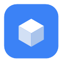
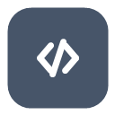

ゲームを、エディタでも
テキストでもAIでも作る。
ECS・物理・Lua スクリプト・暗号化配布まで揃った自作 DirectX 12 エンジン。シーンはエディタでもJSONでも組めて、起動中のエディタを Claude Code から直接操作できる。
function OnStart(self)
player = actor("Player", { speed = 9, solid = { "Wall1" } })
goal = actor("Goal")
end
function OnUpdate(self, dt)
player:moveTopDown(dt) -- WASD移動＋壁判定
cameraFollow(player, { height=13, pitch=55 })
if player:reached(goal, 1.4) then
goToScene("scenes/clear.json", 0.7)
end
end
特徴
「ゲームの中身は全部データ（シーンJSON + .lua）」が基本方針。だから同じものを人間はエディタで、Claude Code はテキストで作れる。エンジン本体（C++）を触らずに機能を足していける。
起動中のエディタを AI から操作
Claude Code / Codex が、エンティティ生成・コンポーネント設定・Luaアタッチ・Play/Stop・スクショ取得まで全37ツールで実行できる。ゲームを「会話で」組み立てる。
AI → dx12_create_entity(type:"box", name:"Floor")
← { entityId: 42, sceneGeneration: 7 }
AI → dx12_set_transform(entity:42, …)
AI → dx12_play() // ゲーム実行ECS + エディタ
entt ベースのECS。Hierarchy / Inspector / ギズモ / Play-Stop を備えた Unity ライクなエディタでシーンを構築。

Lua スクリプト
エンティティに .lua を貼れば OnStart / OnUpdate が回る。高レベルAPIでたいていのゲームが書ける。
物理 (Jolt)
剛体・コライダー・キャラクターコントローラ。接触イベントは EventBus / Lua へ届く。
PBR + ライティング
方向光 / 点光源 / スポット、カスケードシャドウ(CSM)に加え点光源(キューブ×2灯)・スポット(×4灯)も影を落とせる。IBL スカイボックス、SSAO、HDRポストプロセス。27種のパーティクルプリセット。
暗号化して配布
専用ランタイム Game.exe + AES暗号化 game.pak を出力。平文アセットは出ない。GitHub Releases 経由の自動アップデートも内蔵。
クイックスタート
Windows + Visual Studio (C++デスクトップ開発) + vcpkg があればビルドできる。クローンしてバッチを叩くだけ。
前提を用意する
Visual Studio 2022 / 2026 の「C++ によるデスクトップ開発」ワークロード + Windows SDK、そして vcpkg（環境変数 VCPKG_ROOT を設定）。
# 初回だけ: vcpkg を入れる
git clone https://github.com/microsoft/vcpkg.git
cd vcpkg && .\bootstrap-vcpkg.bat
# VCPKG_ROOT を上の vcpkg フォルダに設定しておくクローンしてビルド
付属のバッチが vcvars → アセット暗号鍵の生成 → CMake(Ninja) configure → ビルド までやる。Debug は build_debug.bat。
git clone https://github.com/ryuto-alt/dx12.git
cd dx12
.\build_release.bat :: vcvars + 鍵生成 + cmake + build手動で回すなら CMake プリセットを使う:
cmake --preset windows-release
cmake --build build/release起動する
成果物は build/release/DX12Engine.exe。このexeが エディタ兼ランタイム。起動するとランチャー（新規 / 開く / 最近）が出る。
.\build\release\DX12Engine.exesrc/core/generated/AssetKey.h が tools/gen_asset_key.ps1 で自動生成される（.gitignore 対象。コミットしないこと）。同じツリーで editor と runtime をビルドすれば鍵は一致する。プロジェクト構成
ゲーム1本 = 1 プロジェクト。中身は基本ぜんぶ assets/ の下にまとめる。「assets = ゲームの中身全部、code も data も」と覚えればいい。
MyGame/
├─ MyGame.dx12proj # プロジェクト定義 (defaultScene を指す)
└─ assets/
├─ scenes/*.json # シーン (エンティティ配置)
├─ components/*.lua # 貼り付ける部品 (properties 付き)
├─ prefabs/*.prefab # 再利用テンプレート
├─ models/ textures/ audio/
└─ game.lua # (任意) 起動時に1度読まれるグローバルscriptPath は assets/ からの相対で解決される（"components/Spinner.lua" → assets/components/Spinner.lua）。エディタのランチャーから新規プロジェクトを作るとこの構成が生成される。Gitクローンからプロジェクトを開くこともできる。
エディタの使い方
Hierarchy（左）/ ビューポート（中央）/ アセットブラウザ（中央下、隣にコンソールタブ）/ Inspector（右）の4窓が基本。ツール窓（ポスト処理・Skybox・物理など）はツールバーのトグルで開く。
ツールバー
カメラ操作
| 操作 | 動作 |
|---|---|
| 右クリック + WASD | フライスルーカメラ。Space/Shift で上下、右クリック中はカーソル非表示 |
| F | 選択エンティティにフォーカス（AABBから距離を自動算出） |
| F11 | ボーダレスフルスクリーン切り替え |
編集ショートカット
| キー | 動作 |
|---|---|
| W / E / R | ギズモ切替（移動 / 回転 / スケール） |
| T | ギズモのローカル / ワールド空間切替（Ctrl ドラッグでスナップ） |
| 左クリック | ピッキング選択（Ctrl+クリックでマルチ選択） |
| Ctrl+Z / Ctrl+Y | Undo / Redo（移動・編集・追加削除・複製・リネーム・親子変更を網羅） |
| Ctrl+D | 複製（Ctrl+C / V でコピー / ペースト、全コンポーネントをディープコピー） |
| Del | 削除（子も一括。Undoでサブツリーごと復元） |
| Ctrl+S / Ctrl+N | シーン保存 / 新規シーン |
| ダブルクリック | リネーム |
- Hierarchy へドラッグ&ドロップで親子付け（空白へドロップで解除）。
.luaをドロップでスクリプトをアタッチ。 - Inspector「＋コンポーネント追加」でライト / カメラ / RigidBody / コライダー等を後付け。ヘッダ右クリックで削除。
- Play / Stop で即実行・即停止。停止すると編集状態に戻る（配置したライトやマテリアルもスナップショット復元される）。
コンソール
アセットブラウザの隣タブに常設。エンジン / Lua / ビルド / MCP の全ログが1箇所に集まる（Unity・Unreal のコンソールと同じ位置づけ）。
| 機能 | 内容 |
|---|---|
| 重大度フィルタ | 情報 / 警告 / エラーを件数バッジ付きでトグル。既定は警告+エラーのみ表示（情報は右上のトグルで表示切替） |
| 検索・折りたたみ | テキスト検索（大小無視）。同一メッセージは xN で集約表示 |
| 自動スクロール | 末尾に追従。ログを見返すため上にスクロールした間は追従を止める |
| Play時クリア / エラーで前面 | Play 開始でログをクリア。新着エラーが出るとタブを自動フォーカス |
| 詳細ペイン | 行クリックで全文表示。部分選択コピー・コピーボタン |
| 色分け | ERROR=赤 / WARN=黄 / 情報=薄色、ゼブラ縞で行を判別しやすく |
| Lua 即時実行 | 下部の入力欄に1行 Lua を打つと即実行（Unreal のコンソール入力相当）。scene / fx / camera 等そのまま使える。> コード のエコーと = 結果 を表示、エラーは赤で出る |
| Lua 予測変換 | time. や scene:fi まで打つと候補がポップアップ。Tab で確定・↑↓ で選択・クリックで挿入。候補は実際の Lua 環境から動的に列挙されるので、prelude のヘルパーも自作グローバルも出る |
log(...) / logWarn(...) / logError(...) を使う（print(...) も同じ経路に出る）。詳細は Lua API リファレンス 参照。Lua スクリプト
ゲームの「動き」は Lua で書く。エンティティに .lua をアタッチすると OnStart(self) が1回、OnUpdate(self, dt) が毎フレーム呼ばれる。この2つの関数の中に「入力を読む → 動かす → 勝敗を判定する」を書けば、それがゲームになる。
1. スクリプトはどこに置く・どう付ける
- 置く場所:
assets/components/<名前>.lua（scriptPathはassets/からの相対）。 - 付け方（人間）: AssetBrowser の
.luaを Hierarchy の行 or Inspector へドロップ。または Inspector「＋コンポーネント追加 → スクリプト」。 - 付け方（コード / AI）: シーン JSON のエンティティに
luaScriptブロックを書く（コンポーネント & プレハブ 参照）。 - 2つの作り方: ①コントローラ型＝1個のエンティティに貼った1スクリプトが
actor("Player")等で全体を回す（手早い）。②部品型＝各エンティティに小さな.luaを貼りselfで自分を動かす（再利用しやすい）。混ぜてよい。
2. ライフサイクルと self
スクリプトの骨格はこれだけ。self は「この .lua を貼ったエンティティ自身」を指す。
-- (任意) Inspector に出る公開プロパティ。Play 時に self.<name> に注入される
properties = {
{ name="speed", type="float", default=6 },
}
function OnStart(self) -- Play 開始時に1回
self.t = 0 -- 状態は self に持たせると安全
end
function OnUpdate(self, dt) -- 毎フレーム。dt = 前フレームからの経過秒
self.t = self.t + dt
local tf = self.transform -- 自分の Transform
tf.position = Vec3.new(tf.position.x, 1 + math.sin(self.t)*0.5, tf.position.z)
endself に最初から入っているもの:
| キー | 中身 |
|---|---|
self.entity | エンティティ ID（u32） |
self.name | エンティティ名（文字列） |
self.transform | Transform。.position .rotation（オイラー度）.scale は Vec3 |
self.enabled | この LuaScript が有効か |
self.<prop> | properties で宣言した各値 |
Vec3 を丸ごと代入する: tf.position = Vec3.new(x, y, z)。tf.position.x = 5 のような一部代入は反映されないことがあるので、必ず Vec3.new(...) で入れ直す。3. まず動かす: 最小のゲーム
「プレイヤーを動かして、壁に当たり、ゴールに着いたらクリア画面へ」。これだけで1本のゲームになる。シーンには 4体を置く（エディタ or JSON）: Player(box)・Goal・Wall1・GameCamera(CameraComponent)。そこに下の .lua を Player へ貼る。
local done = false
function OnStart(self)
player = actor("Player", { speed = 9, solid = { "Wall1" } }) -- 名前で掴む。local 無し=OnUpdateでも使える
goal = actor("Goal")
audio:playBGM("audio/bgm.wav") -- BGMを鳴らす(任意)
end
function OnUpdate(self, dt)
if done then return end -- クリア後は何もしない
player:moveTopDown(dt) -- WASDでXZ移動＋Wall1で停止(壁沿いスライド)
cameraFollow(player, { height = 13, back = 8, pitch = 55 }) -- GameCameraを見下ろし追従
ui:text(24, 24, "ゴールを目指せ", 28) -- 画面にHUD(再生中のみ)
if player:reached(goal, 1.4) then -- ゴールにXZ距離1.4まで近づいたら
done = true
FX.supernova(goal:pos().x, 1, goal:pos().z) -- 派手なエフェクト
saveNum("clearTime", loadNum("clearTime", 0)) -- シーンを越えて値を渡す
goToScene("scenes/clear.json", 0.7) -- フェードでクリア画面へ
end
endこれが「ゲームとして機能する」理由はシンプルで、毎フレーム(OnUpdate)で「入力→移動→カメラ→勝敗チェック」を回し、勝ったらシーンを切り替えるから。やっていることは次の4つだけ:
- 入力と移動:
player:moveTopDown(dt)が WASD を読んで XZ 平面で動かし、solidに指定した壁に当たると軸ごと止める。 - カメラ:
cameraFollowがGameCameraをプレイヤーの上から追わせる。 - 勝敗:
player:reached(goal, 1.4)でゴール接近を判定し、doneフラグで1回だけ発火。 - 進行:
goToScene("scenes/clear.json")で次のシーンへ。saveNum/loadNumでスコア等をシーン越しに持ち越す。
Player、ゴール=Goal、見下ろしカメラ=GameCamera、壁=Wall1,Wall2…。この命名にすると actor / cameraFollow の既定値とそのまま噛み合う。書けたら DX12Engine.exe --validate scenes/level1.json で参照切れを確認 → Play で実行。4. 高レベル API（まずこれだけで作れる）
actor はシーン内のエンティティを「名前」で掴むラッパー。cameraFollow / cameraTPS / cameraLockOn は CameraComponent を持つエンティティを動かす。
| API | 説明 |
|---|---|
actor(name, opts) | 名前付きエンティティを操作。opts = { speed=5, solid="Wall" or {…}, half=0.5 } |
a:moveTopDown(dt) | WASD で XZ 平面を移動。solid の箱に当たると壁沿いにスライド。矢印キーは a:moveTopDown(dt, "Arrows") |
a:pos() / a:setPos(x,y,z) | 現在位置 Vec3 取得 / 位置を直接セット |
a:reached(other, r) | 別の actor に近づいたか（XZ距離 < r、既定 1.0）。a:valid() で存在確認 |
cameraFollow(t, opts) | 見下ろし追従。opts = { name="GameCamera", height=13, back=8, pitch=55 } |
cameraTPS(t, opts) | 三人称トレイル（キーボード向け）。opts = { name="MainCamera", dist, height, pitch, yaw, follow } |
cameraLockOn(p, target, opts, st) | ロックオン（ボス戦）。プレイヤー→ターゲット軸にカメラ固定。yaw を返す |
keyDown("W") / keyPressed("ESC") | 押している間 / 押した瞬間。W A S D E Q UP DOWN LEFT RIGHT SPACE SHIFT TAB ENTER ESC |
goToScene(path, sec) / win() | フェード付きでシーン遷移 / sceneflow の「次のシーン」へ |
5. ハマりどころ
- 状態は
selfかグローバルに: 部品型はself.tに、コントローラ型はOnStartでlocal無し代入（player = actor(...)）でOnUpdateでも使える。 - 必ず
dtを掛ける: 移動・回転は速度 * dt。掛けないとフレームレートで速さが変わる。 events:onはOnStart内で: イベント購読は Play 中のみ有効。停止中に呼んでも登録されない。- 当たり判定の2系統: 軽い見下ろし当たりは
actor(..,{solid=})＋moveTopDown。落下・反発・スタックが要るならRigidBody＋コライダー（エディタで付与、スクリプト不要）。 scene:setColorは生成時1回: GPU 同期を伴うので毎フレーム呼ばない。色変えは生成直後だけ。
Lua API リファレンス
全スクリプトから使えるグローバル一覧（scene / input / camera / physics / audio / fx / ui / events …）。座標・色は Vec3 または数値。色は 0..1。
型: Vec3 / Transform / Entity
| API | 説明 |
|---|---|
Vec3.new(x,y,z) | 3次元ベクトル。.x .y .z で読み書き |
e.transform | .position / .rotation（オイラー度）/ .scale（全て Vec3） |
e:isValid() / e.name | 存在確認 / 名前（読み取り） |
e:hasComponent("T") | 所持判定。T = MeshRenderer / PointLight / DirectionalLight / SpotLight / Camera / AudioSource / ParticleEmitter / Trigger / CharacterController / SkeletalAnimation / RigidBody … |
e:playAnim(i, blend) | スケルタルアニメ再生（blend 秒でクロスフェード）。e:playAnimByName(name, blend) |
e:setLooping(b) / e:getAnimCount() / e:getAnimName(i) | ループ設定 / クリップ数 / クリップ名 |
scene：エンティティの取得・生成・検索
| API | 説明 |
|---|---|
scene:findEntity(name) | 名前で Entity を取得（:isValid() で確認） |
scene:spawnBox(name, pos, rot, scale) | 箱を生成して Entity を返す（引数は Vec3） |
scene:spawnSphere(name, pos, radius) | 球を生成 |
scene:spawnPlane(name, pos, size, grid) | 平面（床）を生成。grid=true でグリッド表示 |
scene:spawn(name, modelPath, pos, rot, scale) | モデル（gltf/fbx/obj）を生成 |
scene:remove(e) / scene:getEntityCount() | 削除 / エンティティ数 |
scene:setColor(e, r,g,b) | 頂点カラーで着色（生成時1回だけ。GPU 同期） |
scene:setSpriteEffect(e, value) | Sprite2D の effectValue（カスタムシェーダー汎用値）。毎フレーム可 |
scene:setSpriteAlpha(e, alpha) | Sprite2D の不透明度 0..1（半透明演出）。毎フレーム可 |
scene:setSpriteParams(e, x,y,z,w) | Sprite2D の shaderParams（カスタムシェーダー汎用 float4）。毎フレーム可 |
scene:setMeshEffect(e, value) | MeshRenderer の effectValue（カスタムシェーダー汎用値）。毎フレーム可 |
scene:setMeshParams(e, x,y,z,w) | MeshRenderer の shaderParams（カスタムシェーダー汎用 float4）。毎フレーム可 |
scene:queryByTag(tag) | タグ一致エンティティの名前配列（RTSの群選択など） |
scene:queryInBox(minX,minZ,maxX,maxZ[,tag]) | XZ矩形内の名前配列（矩形選択） |
input：キーボード / マウス
| API | 説明 |
|---|---|
input:isKeyDown(KEY_W) | 押している間ずっと true |
input:isKeyPressed(KEY_SPACE) | 押した瞬間だけ true |
input:isRightMouseDown() | 右クリック中か |
input:getMouseDeltaX() / ...Y() | マウス移動量（視点操作） |
input:setMouseCapture(b) / isMouseCaptured() | カーソル拘束のON/OFF・状態 |
キー定数: KEY_A..KEY_Z / KEY_0..KEY_9 / KEY_SPACE KEY_SHIFT KEY_TAB KEY_ENTER KEY_ESCAPE KEY_UP KEY_DOWN KEY_LEFT KEY_RIGHT KEY_F1..F3 KEY_RBUTTON。文字列名で済ます keyDown("W") / keyPressed("ESC") もある。
input：ゲームパッド（Xbox コントローラー / XInput）
| API | 説明 |
|---|---|
input:isPadConnected(pad) / getConnectedPadCount() | 接続状態（pad = 0..3、最大4台） |
input:isPadButtonDown(pad, PAD_A) | 押している間ずっと true |
input:isPadButtonPressed(pad, PAD_RB) | 押した瞬間だけ true |
input:isPadButtonReleased(pad, PAD_A) | 離した瞬間だけ true（チャージ攻撃向け） |
input:getPadLeftStickX/Y(pad) / getPadRightStickX/Y(pad) | スティック傾き（円形デッドゾーン適用済み、-1..1） |
input:getPadLeftTrigger(pad) / getPadRightTrigger(pad) | トリガー押し込み量（デッドゾーン適用済み、0..1） |
input:setPadVibration(pad, left, right) | 振動（0.0..1.0。left=低周波・強、right=高周波・弱） |
input:setPadVibrationTimed(pad, left, right, sec) | sec 秒後に自動停止する振動（ワンショット向け） |
ボタン定数: PAD_A PAD_B PAD_X PAD_Y PAD_LB PAD_RB PAD_BACK PAD_START PAD_LSTICK PAD_RSTICK PAD_DPAD_UP/DOWN/LEFT/RIGHT。文字列名で済ます簡易API: padDown("A") / padPressed("RB") / padReleased("A") / padStick("left")（x,y を返す）/ padTrigger("right") / padVibrate(low, high, sec?)。2台目以降は各関数末尾に pad（0始まり）を渡す。
physics：当たり判定・剛体・キャラ操作
| API | 説明 |
|---|---|
physics:raycast(origin, dir, maxDist) | レイ判定 → RaycastHit{ hit, distance, point, normal } |
physics:overlapBox(center, half[, n]) | 範囲内の Entity 配列。overlapSphere(center, r[, n]) も |
physics:addRigidBody(e, type, mass) | type = MOTION_STATIC / MOTION_KINEMATIC / MOTION_DYNAMIC |
physics:addBoxCollider(e, hx,hy,hz) | addSphereCollider(e, r) / addCapsuleCollider(e, r, halfH) / autoCollider(e) |
physics:applyImpulse(e, vec) | applyForce / setVelocity / getVelocity / setPosition |
physics:setGravity(vec) / setPaused(b) / step(dt) | 重力変更 / 物理停止 / 手動1ステップ |
physics:addCharacterController(e, r, halfH) | キャラ操作。毎フレーム move(e, vx, vz)、jump(e[, amt])、isGrounded(e) |
camera / audio
| API | 説明 |
|---|---|
camera:project(x,y,z) | ワールド座標 → スクリーン u, v, visible（頭上ダメージ表示など） |
camera:getPosition() / setPosition(v) | 低レベルのフライカメラ操作（yaw/pitch/速度も） |
audio:playBGM(path) / stopBGM() | BGM 再生 / 停止（pauseBGM / resumeBGM） |
audio:playSFX(path) | 効果音を鳴らす |
audio:playSpatial(path,x,y,z,minD,maxD[,vol,loop]) | 3D空間オーディオ（距離減衰） |
audio:setMasterVolume(v) | setBGMVolume / setSFXVolume |
fx / FX / vfx：パーティクル
その場で1発放つ即時パーティクル。座標はワールド、色は 0..1、intensity>1 で白熱（ブルームで光る）。
-- 低レベル: テーブルで細かく指定
fx:burst{ x=px, y=1, z=pz, count=20, kind="fire", speed=6,
r=1, g=0.5, b=0.1, intensity=5, gravity=-3 } -- kind: glow/fire/smoke/spark/magic/electric/ring/star
fx:beam{ x0=ax,y0=ay,z0=az, x1=bx,y1=by,z1=bz, kind="electric" } -- 線(レーザー/稲妻)
fx:pulse(0.5) -- 画面パルス(被弾演出)
-- 高レベル: ワンライナーのプリセット
FX.explosion(x, y, z, scale) -- 爆発(撃破)
FX.supernova(x, y, z) -- レベルアップ超新星
FX.spark(x, y, z) -- 着弾火花 / FX.lightning / FX.pillar / FX.hit
vfx.play("explosion", x, y, z, scale) -- 名前で再生する統一窓口ui：ゲーム内 HUD（即時モード・簡易/デバッグ用）
OnUpdate 内で毎フレーム呼ぶと描画される（Play 中のみ）。位置は SCREEN_W / SCREEN_H で調整。
座標指定で毎フレーム呼ぶだけの簡易 API。動作確認用のデバッグ表示や、ワンオフの表示に向く。
タイトルメニューやHUD一式など恒常的な画面を組むなら、下の「ゲーム内UI（コンポーネント方式）」を推奨。
| API | 説明 |
|---|---|
ui:text(x,y,text[,size,r,g,b,a]) | 文字。スコア・残機・メッセージ |
ui:button(x,y,w,h,label) | ボタン。押されたフレームで true を返す（タイトルメニュー等） |
ui:rect(x,y,w,h[,r,g,b,a,rounding]) | 塗り矩形。HPバー・パネル背景 |
ui:image(x,y,w,h,path) | 画像 |
ゲーム内UI（コンポーネント方式）
Unity uGUI / Godot Control 相当の retained-mode UI。UI要素を ECSコンポーネントとしてシーンに置き、
エディタで編集・シーン JSON に保存できる。レイアウトはアンカー＋ピボットで解像度追従し、
描画は既存の即時 ui:* と同じ全画面オーバーレイ（##GameUI）に統合される
（retained UI が奥、即時 ui:* が手前に描かれる）。ゲーム中の表示条件も同じく Play中 / ゲームモード。
非 Play 中はツールバーの UI トグルで SceneView にプレビュー・編集できる（下の「エディタでの編集」参照）。
配置: Hierarchy を右クリック →「作成」→「UI（ゲーム内UI）」から Canvas / Image / Text / Button を選ぶ。
Image / Text / Button は、選択中のエンティティが UI ツリー内ならその子に、そうでなければシーン内最初の
UICanvas の子に配置される（UICanvas が無ければ自動生成）。
Button は UIRect+UIImage+UIButton と、
ラベル用の子エンティティ（UIText）までまとめて生成される。
エディタでの編集（WYSIWYG）: ツールバーの UI トグルを ON にすると、非 Play 中でも SceneView に UI ツリーがプレビュー描画される。UI 要素はクリックで選択（重なりは最前面優先。UI の無い場所のクリックは従来の 3D ピッキング）。 選択中の要素は矩形内ドラッグで移動、四隅・四辺中点の 8 ハンドルドラッグでリサイズできる（どちらも Ctrl+Z で Undo）。 アンカーの変更は Inspector のアンカープリセットで行う（ドラッグは offset だけを更新し、アンカー設定は保たれる）。
UIエディタ（専用 2D キャンバス）: ツールバーの「窓 ▾」→「UIエディタ」で、 Unreal UMG デザイナー / Unity UI Builder 相当の専用ウィンドウが開く。ゲーム画面と同じスケーリングで UI だけを大きくプレビューしながら編集できる。
- ビュー: マウスホイール＝カーソル中心ズーム、中/右ドラッグ＝パン、Fit / 100% ボタン。 画面サイズドロップダウンで 1080p / 720p / 縦画面などの見え方を切り替えてプレビューできる （実行時と同じ ScaleToFit / レターボックスを再現）。市松背景・グリッド表示あり
- 選択: クリックはウィジェット丸ごと（ボタンならラベルではなくボタン本体）を選択し、 そのままドラッグで移動できる。ラベル等の子だけ触りたい時はダブルクリックで 1 段深掘り （Figma / UMG と同じ方式。SceneView の UI 編集モードも同様）。Ctrl+クリックでマルチ選択
- 編集: 移動ドラッグ・8 ハンドルリサイズに加え、選択中はアンカーハンドル（4 つの三角）が 表示され、ドラッグで直接アンカーを編集できる （見た目の位置は保たれる。0 / 0.5 / 1 にスナップ。三角を割ればストレッチ、中央の丸で 4 つまとめて移動）
- 配置テンプレ: ツールバーの「配置 ▾」（Inspector の UIRect にも同じ 9 方位ボタンあり）で 中央 / 上下左右 / 四隅へスナップ配置。アンカーも同時に設定されるので解像度が変わってもその方位に追従する
- ショートカット: 矢印キー＝1px 移動（Shift で 10px）、Del＝削除、Ctrl+D＝複製（すべて Undo 可）
- 追加: 上部の「＋ Canvas / 画像 / テキスト / ボタン」またはキャンバスの右クリックメニューから。 配置ルールは Hierarchy の「UI（ゲーム内UI）」メニューと同じ
- テクスチャ割当: アセットブラウザから画像を UIImage の上へドラッグ＆ドロップ
| コンポーネント | 主なフィールド | 説明 |
|---|---|---|
UICanvas | refWidth/refHeight, scaleMode, sortOrder, visible |
UIツリーのルート。これが付いたエンティティの子孫が UI 要素になる。scaleMode: 0=ScaleToFit（等比縮小・中央寄せレターボックス）、1=ConstantPixel（左上原点・実ピクセル） |
UIRect | anchorMin/Max, pivot, offsetMin/Max, rotation, skewX, clipChildren, visible |
レイアウト矩形（Unity の RectTransform 相当）。全UI要素に必須。visible=false で自身と子孫ごと非表示。
rotation/skewX（度、時計回り）はピボット回りの見た目の変換（レイアウトは軸平行のまま。子孫も一緒に回る。
UIScrollView 自身では無視され、回転したパネル内の UIScrollView は非対応。逆にスクロールビュー内の回転要素は OK）。
clipChildren=true で子ツリーを自矩形でマスク（ワイプ公開/マーキー。ScrollView 同様このノード自身の回転は無効） |
UIImage | texturePath, color, shape, ringThickness, uvMin/Max, uvScroll, sliceBorder, cornerRadius, raycastBlock, fillAmount, fillDir, fillOrigin, segments, segmentGap/Color, gradientDir, gradientColor2, gradientScrollSpeed, outlineWidth, outlineColor, outlineStyle, outlineDash, shadowColor, shadowOffset, shadowSoftness |
画像。texturePath が空なら単色塗り（cornerRadius で角丸）。sliceBorder(px, 左上右下)で9-slice。
shape（0=矩形 1=楕円 2=リング 3=ダイヤ 4=六角形 5=三角形）で形状描画＝テクスチャは形で切り抜かれる（丸アイコン/バフ枠/スキルノード。
矩形以外は角丸/9-slice 無視。リングは単色専用の帯円=円形ゲージ向き、太さは ringThickness）。
raycastBlock（既定 true）で背後のボタンへのクリックを遮る（Unity の raycastTarget 相当）。
fillAmount（0..1、既定 1）で割合表示＝HPバー/ゲージ（fillDir: 0=左 1=右 2=下 3=上から、4=放射時計回り 5=放射反時計回り＝クールダウン円。放射は矩形にも効き、開始角は fillOrigin。リングの fill は常に円弧）。
segments（0=無効）で fill 軸と直交の区切り線を重ねる分割チャンクゲージ（スタミナ/弾数。矩形+線形fill専用）。
uvMax>1 でタイル繰り返し、uvScroll(uv/秒)で流れるパターン（警告帯/背景ストライプ。9-slice では無効）。
gradientDir（0=なし 1=横 2=縦 3=斜め 4=放射(中心→外)）＋gradientColor2（終端色。αは無視）でグラデーション（テクスチャ/9-slice/角丸/形状すべてに掛かる）。
gradientScrollSpeed（周回/秒。0=静的）を 0 以外にすると、静的グラデの代わりに終端色の光帯がグラデ方向へ流れる＝ガチャボタンの光沢流し（負値で逆方向）。
outlineWidth(px, 0=無効)＋outlineColor で枠線。outlineStyle（0=実線 1=破線 2=コーナーブラケット＝SF/照準HUDの四隅鉤括弧。矩形専用・角丸無視、長さは outlineDash）。
shadowColor（α0=無効）＋shadowOffset(px)＋shadowSoftness(px, 0=シャープ)でドロップシャドウ（形状近似） |
UIText | text, fontSize, color, alignH/V, wrap, outlineWidth, outlineColor, shadowColor, shadowOffset, fontPath, typewriterSpeed, letterSpacing, charAnim, charAnimAmount/Speed, gradientDir, gradientColor2 |
テキスト。alignH/V: 0=左/上 1=中央 2=右/下。wrap=true で矩形幅に折り返し。クリックは遮らない。
outlineWidth＋outlineColor で縁取り（8方位重ね描き）、shadowColor（α0=無効）＋shadowOffset で影。
fontPath（assets 相対の .ttf/.otf。空=既定の Yu Gothic）でフォント差し替え（任意サイズでシャープ。読み込み失敗時は警告して既定フォント）。
typewriterSpeed（文字/秒。0=無効）で Play 中に1文字ずつ表示＝会話文のタイプライター（UTF-8 単位で日本語も1文字ずつ。scene:setUiText で先頭から再生し直し）。
letterSpacing(px。負=詰め)で字間＝タイトルの字間広げ、charAnim（0=なし 1=ウェーブ 2=ジッター 3=レインボー）で1文字ずつ動く/色が回るにぎやかし
（振幅=charAnimAmountpx、速度=charAnimSpeedHz。字間/文字アニメは wrap とは非両立）。
gradientDir（0=なし 1=横 2=縦）＋gradientColor2 で本体のみの2色グラデ＝金色タイトル等（縁取り/影には掛からない） |
UIButton | onClickEvent, normalColor/hoverColor/pressedColor, interactable |
同一エンティティの UIImage を状態色でティントするボタン。release-inside でクリック確定し、
onClickEvent 名で events へ発火。要素が重なった場合は最前面だけが反応
（子要素がクリックを吸っても親ボタンへバブリングする） |
UILayout | mode, cellW/cellH, spacing, padding, gridCols |
自動レイアウトコンテナ（VBox 縦積み / HBox 横並び / Grid 行優先）。直下の子（UIRect 持ち）へ
セル矩形を順番に配る＝手動 offset 計算なしでメニュー列/ツールバー/インベントリが組める。
子は配られたセルを親矩形としてアンカー解決（全面ストレッチの子はセルいっぱい）。
cellW=0(VBox)/cellH=0(HBox) は内側いっぱい。スクロールリストは
UIScrollView の子コンテンツノードに付ける |
UIAnimator | showAnim/showDuration/showDelay/showEasing/slideOffset, hoverScale/pressScale/hoverSpeed, loopAnim/loopSpeed/loopAmount |
UI アニメーション（Play 中のみ再生。効果は自分と子孫にまとめて掛かる）。
出現=フェード / ポップ / 上下左右スライド / スピン（回転入場） / バウンド落下 / フリップ（縦つぶれ/横つぶれから開く） / シェイク入場（イージング 12 種: リニア〜バック/バウンス/弾性/エクスポ/インバック/クイント/サイン、showDelay で順番出し）。
ホバー/押下=UIButton があるとき拡大/縮小で反応。ループ=浮遊 / パルス / 点滅 / スピン（連続回転、loopSpeed=回転数/秒） / スウィング（±loopAmount度）。
Lua の scene:showUi/hideUi で出現アニメの再生 / 逆再生ができる |
アンカー: 親矩形内の正規化座標 anchorMin/anchorMax（0..1）と、
そこからのピクセルオフセット offsetMin/offsetMax で実ピクセル矩形が決まる
（rectMin = parentMin + parentSize*anchorMin + offsetMin、rectMax も同様）。
アンカーが一致する場合（例: 中央固定）は offset が「中心位置 ± 半サイズ」相当になり、Inspector 上は位置(px)＋サイズ(px)として編集できる。
アンカーを引き伸ばす場合（例: 横ストレッチ）は offset がそのまま左右の余白(px)になる。
Inspector の アンカープリセット（9方位＋ストレッチ＋全面）を使うと、選択時に見た目の位置を保ったまま anchor/offset を再計算してくれる。
Lua からの操作（Scene 経由。表示中の値だけを書き換える。ツリー構造自体はエディタで組む）:
-- スコア表示を更新（scoreLabel は UIText 付きエンティティ）
scene:setUiText(scoreLabel, "SCORE: " .. tostring(score))
local current = scene:getUiText(scoreLabel)
-- HPバー: 残量ゲージ（UIImage.fillAmount）＋残量に応じて色も変える
scene:setUiFill(hpBarFill, hp / maxHp)
scene:setUiColor(hpBarFill, 1, hpRatio, 0, 1)
-- パネルの表示切替（UIRect.visible。UICanvasのみのエンティティならUICanvas.visible）
scene:setUiVisible(pausePanel, isPaused)
-- アイコン差し替え
scene:setUiTexture(weaponIcon, "textures/ui/icon_sword.png")
-- スライダー/トグル（値変更は onChangeEvent で受ける。e.value に実値/1・0）
events:on("volumeChanged", function(e) audio:setMasterVolume(e.value) end)
local v = scene:getUiSlider(volSlider)
scene:setUiSlider(volSlider, 0.8) -- イベントは発火しない
local on = scene:getUiToggle(muteToggle)
scene:setUiToggle(muteToggle, true)
-- 動的UI: トゥイーン（イージング付きアニメ。dx/dy=実移動px、scale/scaleX/scaleY/alpha/rotate/color=見た目のみ）
scene:tweenUi(menu, { dx = 200, duration = 0.4, easing = "bounce" })
scene:tweenUi(popup, { scale = 1.2, alpha = 0, duration = 0.25 })
scene:tweenUi(card, { scaleY = 1, duration = 0.35, easing = "back" }) -- 縦つぶれから開く（フリップ風）
scene:tweenUi(hpBar, { color = {3, 0.3, 0.3}, duration = 0.1 }) -- 赤フラッシュ（RGB乗算・1超え=輝き。{1,1,1}で解除）
scene:tweenUi(hpBar, { shake = 10, duration = 0.4 }) -- 振動（px振幅。durationで減衰）
scene:tweenUi(hpFill, { fill = 0.35, duration = 0.3 }) -- ゲージをなめらかに増減（UIImage.fillAmount）
scene:tweenUi(scoreText, { countTo = 12800, countFmt = "%06d", duration = 0.8, easing = "expo",
onComplete = function() audio:playSFX("se/coin.wav") end }) -- 数字ロール+完了SE
scene:stopUiTweens(btn) -- 進行中tweenを全打ち切り（連打対策）
scene:setUiRotation(titleLogo, -8) -- 回転（度・時計回り、子孫ごと）。tweenUi の rotate = 度 でアニメも可
-- 定番演出はワンライナー集 uifx.*（プレリュード組み込み。e はボタンイベントの e.source そのまま可）
uifx.punch(e.source) -- ボタンを押した感 / 他に flash・shake・hit・bounceIn・flipIn・popOut・fadeIn/Out
uifx.stagger(items, 0.07, uifx.slideInLeft) -- リスト項目の順次入場 / slideInRight・slideInUp・popIn
uifx.countTo(scoreText, 12800, 0.8, "%06d") -- 数字ロール / fillTo・damageBar(ゴーストバー)・wiggle・heartbeat
-- 会話文のタイプライター（UIText.typewriterSpeed=文字/秒 を設定するだけ。SPACE で送り/スキップ）
scene:setUiTypewriter(msg, 20)
if scene:isUiTypewriterDone(msg) then nextLine() else scene:setUiTypewriter(msg, 0) end
-- UIAnimator の出現アニメを再生して表示 / 逆再生で消す（子孫ごと）
scene:showUi(winPanel)
scene:hideUi(pauseMenu)ボタンのクリックを受ける: 追加 API は無く、既存の events で受ける。
UIButton.onClickEvent に設定した名前で、release-inside 確定の次フレーム（OnUpdate より前）に発火する。
function OnStart(self)
events:on("start_clicked", function(data)
-- data.source にボタンのエンティティID(entt raw id)が入る。data に他キーは無い
goToScene("assets/scenes/game.json")
end)
endtime：時間 API（ポーズ / スローモ / タイマー）
: ではなく . で呼ぶ。setScale は OnUpdate に渡る dt 自体に掛かるので、既存の移動コードは無改修でスローモ/ポーズに追従する（物理・パーティクルは対象外）。状態は Play 開始でリセット。
| API | 説明 |
|---|---|
time.now() / time.realtime() | Play 開始からの経過秒（スケール適用済み / 実時間） |
time.dt() / time.realDt() | 今フレームの dt（スケール済み / 実時間）。ポーズ中も動かすメニュー等は realDt を使う |
time.frame() | フレームカウンタ |
time.setScale(s) / time.getScale() | タイムスケール。0=ポーズ、0.5=スローモ、2=早送り |
time.after(sec, fn) | sec 秒後に fn を1回実行（スケール済み時間で進む）。戻り値の id を time.cancel(id) へ |
time.every(sec, fn) | sec 秒ごとに fn を繰り返し実行 |
time.video.start(dur, {skipCost}) | ステージ共有のビデオ時計開始。ギミックは t = time.video.localTime(self) の純関数で動きを書く（決定論タイムライン） |
time.video.skip(ent, ±sec) | 対象だけ先送り / 巻き戻し。残り時間を |sec|×skipCost 自動消費。remaining() / finished() で制限時間管理 |
time.localTime(e) / time.skipEntity(e, ±sec) / time.scaleEntity(e, s) | ビデオ時計と独立したエンティティ個別時計。0=そのオブジェクトだけ停止、負=逆再生 |
charge.new(key, {max, rate}) | 押しっぱなしチャージ計測（弓を引く等）。c:update() を毎フレーム、c:ratio() でゲージ、離した瞬間 c:released() が量を返す |
events / シーン遷移 / 値の持ち越し
| API | 説明 |
|---|---|
events:on(name, fn) | 購読（OnStart 内で）。fn(data) が呼ばれる。戻り値の id を events:off(id) へ |
events:emit(name[, data]) | 発火。data = { value=5 }。Trigger の EmitEvent もここに届く |
goToScene(path[, sec]) / loadScene(path) | フェード遷移 / 即ロード |
transitionToScene(path, type[, dur]) | type: 0=Fade 1=Wipe 2=Circle 3=縦Wipe |
nextScene() / quit() | sceneflow の次へ / ゲーム終了 |
saveNum(key, v) / loadNum(key[, def]) | シーンを越えて残る数値（スコア・タイム） |
log(...) / logWarn(...) / logError(...) | 任意個・任意型の引数を tostring 連結してログ出力。エディタのコンソールパネルに出る（print(...) も同じ経路） |
clamp(v,lo,hi) / lerp(a,b,t) | 各種ユーティリティ |
コンポーネント & プレハブ
振る舞いを「プロパティ付きの再利用部品」にする仕組み。巨大な1個のコントローラに全部書くのをやめて、部品を貼って数値だけ変える Unity ライクな作り方ができる。
プロパティ付き Lua コンポーネント
.lua の先頭で properties を宣言すると、その値は Inspectorに自動で編集欄が出て / シーンに保存され / Play時に self.<name> として注入 される。
properties = {
{ name="speed", type="float", default=90, min=-720, max=720, label="回転速度" },
{ name="axis", type="vec3", default={0,1,0} },
{ name="on", type="bool", default=true },
}
function OnUpdate(self, dt)
if not self.on then return end
local t = self.transform
t.rotation = Vec3.new(t.rotation.x, t.rotation.y + self.speed*dt, t.rotation.z)
end| type | Inspector | self.<name> |
|---|---|---|
float / int | スライダー / ドラッグ | number |
bool | チェックボックス | boolean |
string | テキスト入力 | string |
vec3 | XYZ ドラッグ | Vec3 (.x/.y/.z) |
color | カラーピッカー | Vec3 (RGB 0..1) |
entity | エンティティ名のコンボ | Entity (:isValid()) |
シーンJSON側では luaScript ブロックに props を書く（type が自己記述的なのでスキーマ無しで復元できる）:
{
"name": "Coin",
"primitive": "box",
"luaScript": {
"scriptPath": "components/Spinner.lua",
"props": [
{ "name":"speed", "type":"float", "value":180 },
{ "name":"axis", "type":"vec3", "value":[0,1,0] }
]
}
}プレハブ
エンティティ（+子）を1ファイルにまとめて何度でも配置できるテンプレート。Hierarchyで右クリック「プレハブにする」で assets/prefabs/<名前>.prefab に保存。アセットブラウザからシーンへドロップで配置（サブツリーごと生成、1回のUndoで戻せる）。形式はシーンと同形で、parent は配列内のローカル index 参照。
人間でも、コードでも
.luaを書いて D&D で貼る- Inspector のプロパティ欄で数値調整
- 右クリック「プレハブにする」→ D&D で再利用
assets/components/X.luaを書く- シーンJSONの
luaScript.propsを書く assets/prefabs/X.prefabを書いて配置
データ駆動オーサリング
エフェクトもイベントも、コードを書かずにデータで配線する。エンジンは汎用のまま、ゲーム差分は Lua とJSONに閉じる。Claude Code はテキストを書いて --validate で自己検証できる。
エフェクトを置く: ParticleEmitter
Transform のワールド位置からパーティクルを放出する部品。エディタでも常時プレビューされる。Trigger の PlayEffect / StopEffect で発火・停止できる。
| フィールド | 意味 | 既定 |
|---|---|---|
kind | 見た目 0=Glow 1=Fire 2=Smoke 3=Spark 4=Magic 5=Electric 6=Ring 7=Star | 0 |
blend | 0=加算（光物）/ 1=アルファ（煙） | 0 |
rate | 連続放出レート（個/秒） | 30 |
looping / duration | false なら duration 秒だけ放出（ワンショット） | true / 1.0 |
dir / spread | 放出方向 / 拡がり(0=集中, 1=全球) | [0,1,0] / 0.4 |
color / colorEnd | 開始色 → 終了色（RGB 0..1） | 炎色 |
intensity | HDR輝度（>1 で白熱 → ブルーム） | 3 |
gravity / drag / stretch | y加速 / 減衰 / 速度方向の伸び | 0 / 1 / 0 |
イベントを置く: Trigger + Action
範囲（箱 / 球）に 入った / 出た / 居る とき、宣言的なアクション列を実行する。「X したら Y する」をコードなしで配線できる。
{
"name": "GoalZone",
"trigger": {
"shape": 0, "halfExtents": [1.5,1.5,1.5],
"filter": "Player", "once": true,
"actions": [
{ "when":0, "type":4, "target":"GoalBurst" }, // PlayEffect
{ "when":0, "type":10, "str":"reachedGoal" }, // EmitEvent
{ "when":0, "type":8, "str":"scenes/clear.json", "num":0.6 }
]
}
}when: 0=Enter / 1=Exit / 2=Stay。アクション type は11種:
| type | 名前 | 効果 |
|---|---|---|
| 0 / 1 | Enable / Disable | target の LuaScript を有効 / 無効化 |
| 2 | Destroy | target を削除 |
| 3 | Move | target を vec だけ相対移動 |
| 4 / 5 | PlayEffect / StopEffect | target の ParticleEmitter を放出開始 / 停止 |
| 6 | PlaySound | target の AudioSource を再生 |
| 7 / 8 | LoadScene / FadeToScene | str のシーンへ即切替 / フェード切替 |
| 9 | SetProperty | target の実行中スクリプトの self[str] = num |
| 10 | EmitEvent | イベントバスへ events:emit(str, {value=num}) |
イベントバスで疎結合に
ゲーム固有の処理（残り時間+5、状態遷移など）は EmitEvent で投げて、ゲーム側 Lua が events:on で受ける。購読は必ず OnStart 内で登録する（Playing中のみ有効）。
function OnStart(self)
events:on("reachedGoal", function() ST.state = "clear" end)
events:on("addTime", function(d) ST.remaining = ST.remaining + (d.value or 0) end)
endDX12Engine.exe --validate <scene.json> が JSON妥当性・スクリプト不在・エンティティ参照切れ・Trigger の target / filter 不正を validate_report.txt と標準出力に RESULT: PASS / FAIL で報告する（終了コード 0/1）。Claude Code はこれを回して GUI なしで参照切れを自己修正できる。MCP / AIブリッジ
起動中のエディタが 127.0.0.1 で待ち受ける TCP ブリッジに、Node 製 MCP サーバが繋ぐ。AI がシーンを読み・エンティティを生成し・コンポーネントを設定し・Luaを貼り・Play/Stop まで回せる。
セットアップ
MCP サーバを入れる
Node v24+ が必要（.ts を直接実行するので tsc ビルド不要）。スクリプトが npm install と自己テストまでやる。
cd tools/mcp-server
.\install.ps1 # Linux / macOS は ./install.shClaude Code / Codex に登録
<REPO> はクローンした絶対パスに置換する。
# Claude Code
claude mcp add dx12-engine -- node <REPO>/tools/mcp-server/index.tsエディタを起動してシーンを開く
あとは AI から dx12_list_entities などを呼ぶだけ。エディタの「ウィンドウ → MCP / AI Bridge」パネルで接続状態とコマンド履歴を確認できる。ポートは 8787-8797 で自動採番（確定値は %TEMP%\dx12_mcp.port）。
全37ツール（dx12_ 接頭辞・エンジン35 + Node合成2）
読み取り（同期・12）
ping list_entities get_entity find_entity query_entities list_scenes list_assets get_mode get_log describe_components get_scene_settings screenshot
編集（同期・14）
set_transform set_component remove_component set_parent rename_entity select_entity focus_camera set_pbr set_scene_settings undo redo save_scene create_lua_component attach_lua_component
生成・モード（遅延同期・9）
create_entity spawn_model spawn_prefab duplicate_entity delete_entity open_scene new_scene play stop
Node 合成（2）
batch（複数callを順次実行）focus_and_screenshot（フォーカス→描画→撮影）
遅延同期の生成系は、エンジン内部ではフレーム境界（GPU が使える瞬間）で実処理されるが、AI 側は id で待つだけでよい。処理完了後に同じ id で本物の entityId が返る。「名前で list して探す」旧パターンは不要、返ってきた id をそのまま使い続ける。
AI → dx12_create_entity(type:"box", name:"Floor")
↓ (フレーム境界まで待機)
← { entityId: 42, name: "Floor", sceneGeneration: 7 }
AI → dx12_set_transform(entity: 42, …) // そのまま entityId を使う127.0.0.1 のみ。最初の1行が JSON で始まらない接続は即切断（ブラウザのドライブバイを遮断）。パス系ツールは assets 相対のみ。ゲーム（封印ランタイム）ではブリッジは起動しない＝配布物は外から触れない。配布とアセット保護
配布ゲームは「絶対にエディタにならないゲーム専用exe + 暗号化アセット」で出す。設定ファイルを消してもエディタになる経路はゼロ。
ビルドして配る
エディタでプロジェクトを開いて Build、または CLI でヘッドレスビルド:
DX12Engine.exe --build "<projectDir>"<projectDir>/build/game/ に次が出力される（平文アセットは出ない）:
Game.exe= ゲーム専用ランタイム（GameRuntime。コンパイル時にゲームモード固定でエディタ経路を除外）game.pak= 全アセットを AES-256-GCM 暗号化 + 圧縮した単一パック（GCMタグで改ざん検知）shaders/と必要な DLL
アセットパックの仕組み
- テクスチャ / モデル(glTFの外部bin含む) / 音源 / Lua / シーンJSON の全ローダが VFS 経由に統一。ゲームは pak を復号、エディタはルーズファイルを透過的に読む。
- 鍵はビルド毎にランダム生成して難読化保存（
.gitignore済み・コミットしない）。クライアント側暗号は「抑止」であって完全な秘匿ではない前提。 - ブート設定（タイトル / 開始シーン / ウィンドウ）は pak 内の
__manifest__に格納。
GitHub Releases で自動アップデート
配布レイアウト（exe隣にassets/）でのみ、起動時に GitHub の releases/latest を見て、タグが新しければ確認ダイアログ → zip をダウンロード → 本体終了を待って上書き再起動する。リポジトリは public 必須（無認証API）。
DX12Engine.exe、配布は Game.exe + game.pak。C++ モジュール API
エンジンを C++ から埋め込む / 拡張する場合の主要クラスの public API（抜粋）。全クラスは namespace dx12e。ゲーム作りは上の Lua / コンポーネントだけで完結する。ここはエンジン本体をいじる人向け。
コア・シーン
| クラス | 主な API |
|---|---|
Application | Initialize(hInstance, nCmdShow, gameMode=false) / Run() / Shutdown() / BuildGameStandalone()。埋め込みは基本この3つ。 |
Scene | Spawn / SpawnBox / SpawnSphere / SpawnPlane(...) → Entity / Remove / Clear / FindEntity / QueryByTag / QueryInBox / GetRegistry()(entt) / GetPostSettings / GetSkyboxSettings / GetSSAOSettings() |
Entity | AddComponent<T>() / GetComponent<T>() / HasComponent<T>() / RemoveComponent<T>() / GetHandle() / IsValid() |
SceneSerializer (static) | Save / Load / SaveToString / LoadFromString / SerializeEntity / InstantiateEntity / DuplicateEntity / SerializeSubtree / InstantiateSubtree / SavePrefab / InstantiatePrefab |
SceneFlow | Load / Save / Start / SetStart / Next(rel) / OnFail(rel) / SetNext / SetOnFail（sceneflow.json と対応） |
描画・リソース
| クラス | 主な API |
|---|---|
Camera | SetPerspective / SetOrthographic(...) / IsOrthographic() / LookAt / MoveForward / MoveRight / MoveUp / Rotate / GetView/Projection/ViewProjMatrix() / Get/SetYaw・Pitch・MoveSpeed・MouseSensitivity |
Mesh | Initialize(device, vertices, indices) / InitializeAsBox / AsPlane / AsSphere / SetMaterial / GetMaterial / GetAABBMin/Max / ApplyUVScale / SetVertexColor / static GetInputLayout() |
Material (struct) | albedoTexture / normalMapTexture / metalRoughnessTexture / defaultMetallic=1 / defaultRoughness=1 / srvBlockIndex |
ParticleSystem | Initialize(device, rtv, dsv, shaderDir) / Emit(EmitParams) / EmitBeam(BeamParams) / Update / Clear / Render / SetSceneDepth / SetTime / AddPulse / AliveCount（Lua fx:* の実体） |
ResourceManager | Initialize(device, srvHeap, cmdList) / GetOrLoadTexture / GetOrLoadModel / GetOrLoadEmbeddedTexture / GetDefaultWhite/Normal/MetalRoughnessTexture / FinishUploads |
ModelLoader (static) | LoadFromFile(device, cmdList, path, resourceManager) → ModelData / LoadAnimationsFromFile(path, skeleton)（Assimp: glTF/OBJ/FBX） |
入力・音・物理・スクリプト
| クラス | 主な API |
|---|---|
InputSystem | Initialize(hwnd) / Update() / IsKeyDown / IsKeyPressed / IsAsyncKeyDown / GetMouseDeltaX/Y / SetMouseCapture / ToggleMouseCapture / OnKeyDown / OnRawInput / OnFocusLost（WndProc から） |
AudioSystem | Lua audio:* の実体 + SetListener(...) / PlaySFXSpatial(...) → slotId / UpdateSpatialEmitter / Update() / SetAssetsDir |
PhysicsSystem | Lua physics:* の実体 + RegisterBody / UnregisterBody / RegisterCharacter / StepCharacters / SyncCharactersToTransforms / Raycast / OverlapBox / OverlapSphere / SetEventBus(bus)（接触 engine.contact.enter/exit） |
ScriptEngine | Initialize(scene, input, camera, audio, physics, assetsDir) / LoadScript / AttachScriptToEntity / DetachScriptFromEntity / OnPlayStart / OnPlayStop / UpdateAttachedScripts / UpdateTriggers / GetPropertySchema / CheckLuaSyntax / Set*Callback(...) |
GraphicsDevice / SwapChain / DescriptorHeap / PipelineState / RootSignature / Buffer / Texture ほか）、エディタ（EditorLayer / 各 Panel / UndoSystem）、VFS/pak、Project 系は内部実装寄りのため未収載。完全な一覧は docs/API_REFERENCE.md を参照。リファレンス & リンク
より詳しい一次ドキュメントはリポジトリの docs/ にある。このページはそれらの要点をまとめた使い方ガイド。
| ドキュメント | 中身 |
|---|---|
docs/API_REFERENCE.md | API 完全リファレンス（Lua 全API・コンポーネント・データ駆動・CLI・MCP・C++ モジュール） |
docs/SCRIPTING.md | Lua スクリプトAPIガイド（高レベル / 低レベル） |
docs/SCRIPT_COMPONENTS.md | プロパティ付きコンポーネント / プレハブ |
docs/AUTHORING.md | ParticleEmitter / Trigger+Action / イベントバス / validate |
docs/MCP.md | MCP / AIブリッジ 完全リファレンス（全87ツール・error_code） |
docs/ASSET_PROTECTION_DESIGN.md | ゲーム専用ランタイム + 暗号化パックの設計 |